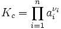

Химическая кинетика и катализ
Скорость химической реакции. Закон действующих масс. Кинетическое уравнение для моно- и бимомолекулярных реакций.
Скорость химической реакции - изменение количества вещества одного из реагирующих веществ за единицу времени в единице реакционного пространства. Скорость химической реакции — величина всегда положительная, поэтому, если она определяется по исходному веществу (концентрация которого убывает в процессе реакции), то полученное значение домножается на −1.
Скорость реакции определяется изменением молярной концентрации одного из реагирующих веществ:
V = ± ((С2 – С1) / (t2 - t1)) = ± (DС / Dt)
где С1 и С2 - молярные концентрации веществ в моменты времени t1 и t2 соответственно (знак (+) – если скорость определяется по продукту реакции, знак (–) – по исходному веществу).
Реакции происходят при столкновении молекул реагирующих веществ. Ее скорость определяется количеством столкновений и вероятностью того, что они приведут к превращению. Число столкновений определяется концентрациями реагирующих веществ, а вероятность реакции - энергией сталкивающихся молекул.
Факторы, влияющие на скорость химических реакций.
1. Природа реагирующих веществ. Большую роль играет характер химических связей и строение молекул реагентов. Реакции протекают в направлении разрушения менее прочных связей и образования веществ с более прочными связями. Так, для разрыва связей в молекулах H2 и N2 требуются высокие энергии; такие молекулы мало реакционноспособны. Для разрыва связей в сильнополярных молекулах (HCl, H2O) требуется меньше энергии, и скорость реакции значительно выше. Реакции между ионами в растворах электролитов протекают практически мгновенно.
2. Концентрация. С увеличением концентрации (числа частиц в единице объема) чаще происходят столкновения молекул реагирующих веществ - скорость реакции возрастает.
Закон действующих масс (К. Гульдберг, П.Вааге, 1867г.)
Скорость химической реакции прямо пропорциональна произведению концентраций реагирующих веществ.
aA + bB + . . . ® . . .
V = k • [A]a • [B]b • . . .
Закон действующих масс (К. Гульдберг, П.Вааге, 1867г.)
Скорость химической реакции прямо пропорциональна произведению концентраций реагирующих веществ.
aA + bB + . . . ® . . .
V = k • [A]a • [B]b • . . .
Константа скорости реакции k зависит от природы реагирующих веществ, температуры и катализатора, но не зависит от значения концентраций реагентов.
Физический смысл константы скорости заключается в том, что она равна скорости реакции при единичных концентрациях реагирующих веществ.
Для гетерогенных реакций концентрация твердой фазы в выражение скорости реакции не входит.
3.Температура. При повышении температуры на каждые 10°C скорость реакции возрастает в 2-4 раза (Правило Вант-Гоффа). При увеличении температуры от t1 до t2 изменение скорости реакции можно рассчитать по формуле:
(t2 - t1) / 10
Vt2 / Vt1
= g
(где Vt2 и Vt1 - скорости реакции при температурах t2 и t1 соответственно; g- температурный коэффициент данной реакции).
Правило Вант-Гоффа применимо только в узком интервале температур. Более точным является уравнение Аррениуса:
k = A • e –Ea/RT
где
A - постоянная, зависящая от природы реагирующих веществ;
R - универсальная газовая постоянная [8,314 Дж/(моль • К) = 0,082 л • атм/(моль • К)];
Ea - энергия активации, т.е. энергия, которой должны обладать сталкивающиеся молекулы, чтобы столкновение привело к химическому превращению.
4.Поверхность соприкосновения реагирующих веществ. Для гетерогенных систем (когда вещества находятся в разных агрегатных состояниях), чем больше поверхность соприкосновения, тем быстрее протекает реакция. Поверхность твердых веществ может быть увеличена путем их измельчения, а для растворимых веществ - путем их растворения.
5. Катализ. Вещества, которые участвуют в реакциях и увеличивают ее скорость, оставаясь к концу реакции неизменными, называются катализаторами. Механизм действия катализаторов связан с уменьшением энергии активации реакции за счет образования промежуточных соединений. При гомогенном катализе реагенты и катализатор составляют одну фазу (находятся в одном агрегатном состоянии), при гетерогенном катализе - разные фазы (находятся в различных агрегатных состояниях). Резко замедлить протекание нежелательных химических процессов в ряде случаев можно добавляя в реакционную среду ингибиторы (явление "отрицательного катализа").
Закон действующих масс устанавливает соотношение между массами реагирующих веществ в химических реакциях при равновесии. Закон действующих масс сформулирован в 1864—1867 гг. К. Гульдбергом и П. Вааге. Согласно этому закону скорость, с которой вещества реагируют друг с другом, зависит от их концентрации. Закон действующих масс используют при различных расчетах химических процессов. Он позволяет решить вопрос, в каком направлении возможно самопроизвольное течение рассматриваемой реакции при заданном соотношении концентраций реагирующих веществ, какой выход нужного продукта может быть получен.
 где
ai — активности веществ, выраженные через концентрации, парциальные давления либо мольные доли;
νi — стехиометрический коэффициент (для исходных веществ принимается отрицательным, для продуктов — положительным);
Kc — константа химического равновесия.
Закон действующих масс безусловно выполняется только для элементарных химических реакций, протекающих в одну стадию. В других случаях фактическая и вычисленная по закону действующих масс скорости совпадают редко.
Кинетическое уравнение для моно- и бимолекулярных реакций.
Простые мономолекулярные реакции:
Реакция изомеризации — превращение одного реагента (частицы) в один продукт:
Диссоциация — распад молекулы, связанный с разрывом одной связи:
Реакция распада — превращение одной молекулы (частицы) в две или несколько частиц (молекула, радикал, ион):
Реакция элиминирования — распад многоатомной молекулы на несколько молекул:
Простые бимолекулярные реакции
Реакция присоединения — взаимодействие двух реагентов друг с другом, из которых, по крайней мере, один является молекулой:
Реакции электрофильного и нуклеофильного замещения — реакции замены активной группы в молекуле на другую группу:
Реакция отрыва — взаимодействие молекулы с атомом, радикалом или ионом, приводящее к образованию молекулярного продукта и новой активной частицы:
Реакция рекомбинации — взаимодействие двух атомов, радикалов, ионов, приводящее к образованию молекулярного продукта:
Реакция диспропорционирования — перераспределение атомов или их группировок между двумя одинаковыми молекулами, радикалами в результате их взаимодействия.